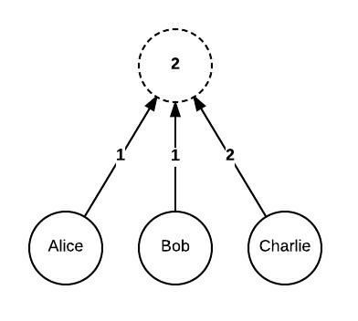

Data types¶
Corda provides a large standard library of data types used in financial transactions and contract state objects. These provide a common language for states and contracts.
Amount¶
The Amount class is used to represent an amount of some
fungible asset. It is a generic class which wraps around a type used to define the underlying product, called
the token. For instance it can be the standard JDK type Currency, or an Issued instance, or this can be
a more complex type such as an obligation contract issuance definition (which in turn contains a token definition
for whatever the obligation is to be settled in).
Note
Fungible is used here to mean that instances of an asset is interchangeable for any other identical instance, and that they can be split/merged. For example a £5 note can reasonably be exchanged for any other £5 note, and a £10 note can be exchanged for two £5 notes, or vice-versa.
Here are some examples:
// A quantity of some specific currency like pounds, euros, dollars etc.
Amount<Currency>
// A quantity of currency that is issued by a specific issuer, for instance central bank vs other bank dollars
Amount<Issued<Currency>>
// A quantity of obligations to deliver currency of any issuer.
Amount<Obligation.State<Currency>>
Amount represents quantities as integers. For currencies the quantity represents pennies, cents or whatever
else the smallest integer amount for that currency is. You cannot use Amount to represent negative quantities
or fractional quantities: if you wish to do this then you must use a different type e.g. BigDecimal. Amount
defines methods to do addition and subtraction and these methods verify that the tokens on both sides of the operator
are equal (these are operator overloads in Kotlin and can be used as regular methods from Java). There are also
methods to do multiplication and division by integer amounts.
State¶
A Corda contract is composed of three parts; the executable code, the legal prose, and the state objects that represent
the details of a specific deal or asset (see Data model for further detail). In relational database terms
a state is like a row in a database. A reference to a state in the ledger (whether it has been consumed or not)
is represented with a StateRef object. If the state ref has been looked up from storage, you will have a
StateAndRef which is simply a StateRef plus the data.
The ContractState type is an interface that all states must implement. A TransactionState is a simple
container for a ContractState (the custom data used by a contract program) and additional platform-level state
information, such as the notary pointer (see Consensus model).
A number of interfaces then extend ContractState, representing standardised functionality for common kinds
of state:
OwnableState- A state which has an owner (represented as a
PublicKey, discussed later). Exposes the owner and a function for replacing the owner e.g. when an asset is sold.LinearState- A state which links back to its previous state, creating a thread of states over time. A linear state is useful when modelling an indivisible/non-fungible thing like a specific deal, or an asset that can’t be split (like a rare piece of art).
DealState- A LinearState representing an agreement between two or more parties. Intended to simplify implementing generic flows that manipulate many agreement types.
FixableDealState- A deal state, with further functions exposed to support fixing of interest rates.
NamedByHash and UniqueIdentifier¶
Things which are identified by their hash, like transactions and attachments, should implement the NamedByHash
interface which standardises how the ID is extracted. Note that a hash is not a globally unique identifier: it
is always a derivative summary of the contents of the underlying data. Sometimes this isn’t what you want:
two deals that have exactly the same parameters and which are made simultaneously but which are logically different
can’t be identified by hash because their contents would be identical. Instead you would use UniqueIdentifier.
This is a combination of a (Java) UUID representing a globally unique 128 bit random number, and an arbitrary
string which can be paired with it. For instance the string may represent an existing “weak” (not guaranteed unique)
identifier for convenience purposes.
FungibleAssets and Cash¶
There is a common FungibleAsset superclass for contracts which model fungible assets, which also provides a standard
interface for its subclasses’ state objects to implement. The clear use-case is Cash, however FungibleAsset is
intended to be readily extensible to cover other assets, for example commodities could be modelled by using a subclass
whose state objects include further details (location of the commodity, origin, grade, etc.) as needed.
Transaction lifecycle types¶
The WireTransaction class contains the core of a transaction without signatures, and with references to attachments
in place of the attachments themselves (see also Data model). Once signed these are encapsulated in the
SignedTransaction class. For processing a transaction (i.e. to verify it) it is first converted to a
LedgerTransaction, which involves verifying the signatures and associating them to the relevant command(s), and
resolving the attachment references to the attachments. Commands with valid signatures are encapsulated in the
AuthenticatedObject type.
Note
A LedgerTransaction has not necessarily had its contracts be run, and thus could be contract-invalid
(but not signature-invalid). You can use the verify method as shown below to run the contracts.
When constructing a new transaction from scratch, you use TransactionBuilder, which is a mutable transaction that
can be signed once modification of the internals is complete. It is typical for contract classes to expose helper
methods that can contribute to a TransactionBuilder.
Here’s an example of building a transaction that creates an issuance of bananas (note that bananas are not a real contract type in the library):
val notaryToUse: Party = ...
val txb = TransactionBuilder(notary = notaryToUse).withItems(BananaState(Amount(20, Bananas), fromCountry = "Elbonia"))
txb.signWith(myKey)
txb.setTime(Instant.now(), notaryToUse, 30.seconds)
// We must disable the check for sufficient signatures, because this transaction is not yet notarised.
val stx = txb.toSignedTransaction(checkSufficientSignatures = false)
// Alternatively, let's just check it verifies pretending it was fully signed. To do this, we get
// a WireTransaction, which is what the SignedTransaction wraps. Thus by verifying that directly we
// skip signature checking.
txb.toWireTransaction().toLedgerTransaction(services).verify()
In a unit test, you would typically use a freshly created MockServices object, or more realistically, you would
write your tests using the domain specific language for writing tests.
Party and PublicKey¶
Entities using the network are called parties. Parties can sign structures using keys, and a party may have many keys under their control.
Parties may sometimes be identified pseudonymously, for example, in a transaction sent to your node as part of a chain of custody it is important you can convince yourself of the transaction’s validity, but equally important that you don’t learn anything about who was involved in that transaction. In these cases a public key may be present without any identifying information about who owns it.
Identities of parties involved in signing a transaction can be represented simply by a PublicKey, or by further
information (such as name) using the Party class. An AuthenticatedObject represents an object (like a command)
that has been signed by a set of parties.
Note
These types are provisional and will change significantly in future as the identity framework becomes more fleshed out.
Multi-signature support¶
Corda supports scenarios where more than one key or party is required to authorise a state object transition, for example: “Either the CEO or 3 out of 5 of his assistants need to provide signatures”.
Composite Keys¶
This is achieved by public key composition, using a tree data structure CompositeKey. A CompositeKey is a tree that
stores the cryptographic public key primitives in its leaves and the composition logic in the intermediary nodes. Every intermediary
node specifies a threshold of how many child signatures it requires.
An illustration of an “either Alice and Bob, or Charlie” composite key:

To allow further flexibility, each child node can have an associated custom weight (the default is 1). The threshold then specifies the minimum total weight of all children required. Our previous example can also be expressed as:
{kind=link}
Verification¶
Signature verification is performed in two stages:
- Given a list of signatures, each signature is verified against the expected content.
- The public keys corresponding to the signatures are matched against the leaves of the composite key tree in question, and the total combined weight of all children is calculated for every intermediary node. If all thresholds are satisfied, the composite key requirement is considered to be met.
Date support¶
There are a number of supporting interfaces and classes for use by contract which deal with dates (especially in the
context of deadlines). As contract negotiation typically deals with deadlines in terms such as “overnight”, “T+3”,
etc., it’s desirable to allow conversion of these terms to their equivalent deadline. Tenor models the interval
before a deadline, such as 3 days, etc., while DateRollConvention describes how deadlines are modified to take
into account bank holidays or other events that modify normal working days.
Calculating the rollover of a deadline based on working days requires information on the bank holidays involved
(and where a contract’s parties are in different countries, for example, this can involve multiple separate sets of
bank holidays). The BusinessCalendar class models these calendars of business holidays; currently it loads these
from files on disk, but in future this is likely to involve reference data oracles in order to ensure consensus on the
dates used.
Cryptography & maths support¶
The SecureHash class represents a secure hash of unknown algorithm. We currently define only a single subclass,
SecureHash.SHA256. There are utility methods to create them, parse them and so on.
We also provide some mathematical utilities, in particular a set of interpolators and classes for working with splines. These can be found in the maths package.